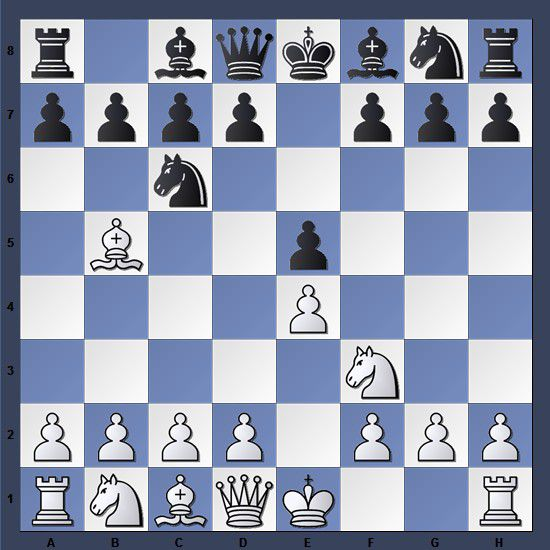

Openings
This opening begins with the move Pawn-e4, followed by Knight-f3, and finally bishop b-5
If you analyse carefully you can see how much pressure white is putting on the two center squares
This is known as the Spanish opening and was made famous by Ruy-lopez